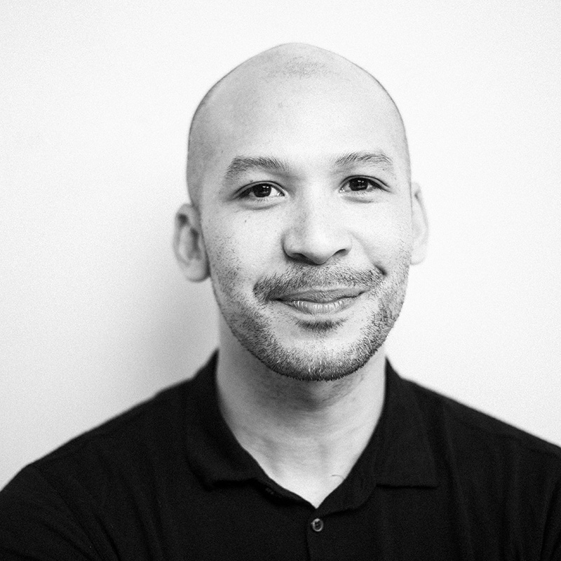
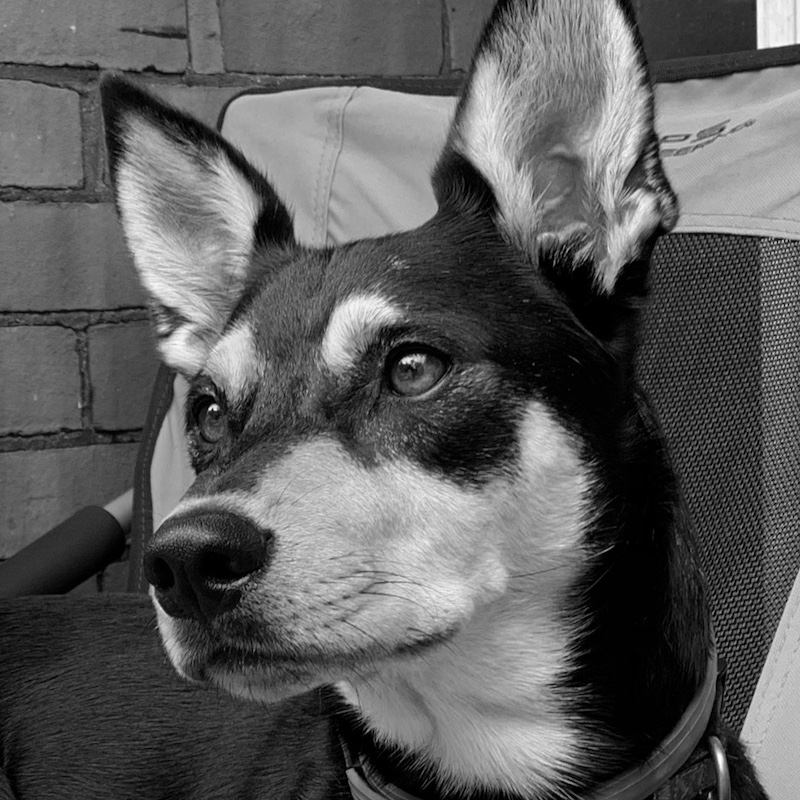

Working on one project or within one business unit is not usually the best way to advance long-term, large-scale change. I’ve tried. More often than not, organizational boundaries and siloed thinking creates stagnation and gridlock. I seek integrative thinking across companies and action that brings together multitudes of stakeholders.
Creating the future and moving people to innovate isn’t done solely through numbers and analytics. I believe in the human process of discourse, debate, and alignment. I use frameworks that are a systematic way to frame human ecologies and wicked problems that don’t make it into a spreadsheet, and then acting on them critically and collectively.
Problems of business, technology, and the human experience are complex. Simplification has its risks: you can lose resolution, the social dimension, or the interconnections. I rely heavily on frameworks to clarify the complexity without simplifying it.
Blue sky. Focus groups. Market reports. Cool. Unfortunately, these approaches provide generalized guidance, short term solutions, or direction that leads into corners. They show us what doesn’t work. I like to test ideas through experimentation, nudging systems from all sides. This helps my team learn fast, align to a clear direction, and get to more sound solutions faster.
Innovation is full of incomplete information and insufficient data, but decisions still need to be made. I believe in taking risks because what choice is there? I work with companies to understand how to fill information gaps with strategic-first principles, company and audience values, and how to follow hunches with confidence.
I seek middle-way outcomes that balance the needs of business strategy and stakeholder needs; efficiency and experience; the bureaucrat and the risk-taker. Too much emphasis in either direction leads to being stuck with “the way things have always been done” or risk too great to assume. Truly innovative solutions harmonize the two sides.